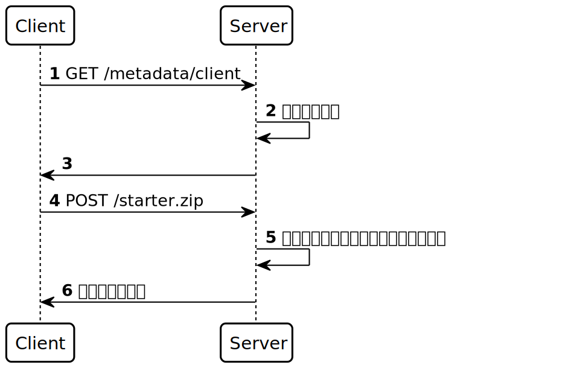
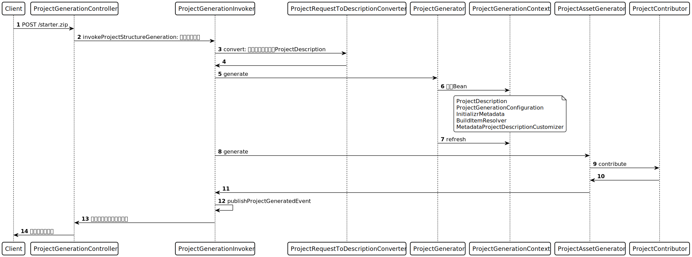

Spring Initializr提供了生成JVM平台代码的类库.
1. 项目地址
-
initializr : 核心类库
-
start.spring.io : 前端和服务端代码
2. 接口交互过程

3. 核心类库功能
3.1. ProjectRequest
-
前端的项目创建请求参数对象.
3.2. ProjectGenerationController
-
将请求参数转换成ProjectRequest对象.
-
提供了生成项目压缩包或者build文件(pom.xml/build.gradle)的接口.
3.3. InitializrMetadata
-
服务端的application.yml配置信息对象.
3.4. ProjectDescription
-
待创建的项目配置对象.
3.5. ProjectRequestToDescriptionConverter
-
将ProjectRequest请求信息和InitializrMetadata配置信息合并, 生成待用的ProjectDescription对象.
3.6. ProjectGenerator
创建项目的主流程类
-
每次接收到创建请求, 就会创建一个新的ApplicationContext用于生成项目.
-
注册创建项目需要用到的bean到ApplicationContext里, 如ProjectDescription/InitializrMetadata对象等.
-
加载spring.factories文件里的ProjectGenerationConfiguration注解类.
-
使用ProjectAssetGenerator来创建项目文件.
3.7. ProjectAssetGenerator
-
创建一个项目临时文件夹.
-
获取所有的ProjectContributor, 调用contribute方法修改项目.
4. 项目创建过程
